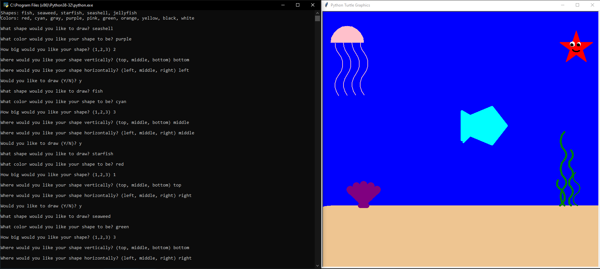

This is my Portfolio Page!
Our first project, Draw It Yourself, allows the user to choose the shape, color, size, and location of an object in an underwater environment. The program asks the user specific questions, for example "What shape would you like to draw?, and the user answers using a list of given objects. Then, the user also picks a color, size, and location and the program draws it for them. Finally, the program asks the user to if they would like to coninue drawing shapes.